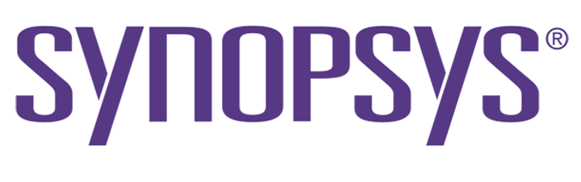

IKONChief of Operations - Ikon Labs Jun 2020 - PresentSkills : Project Management | Community Service | Project Negotiation Taking administrative decisions, strategic planning and coordinating affairs with clients and internal stakeholders to bring out the best IT services. Links: Ikon LabsWordpress Developer Skills : Wordpress | UI Design | Bootstrap | HTML | CSS | JQuery Jun 2019 - Feb 2021Web development in wordpress. |
|  |
Synopsys Inc.Application Engineer Jul 2022 - Jul 2023Skills : RTL Design | Verilog | Sysnopsys VCS| Python | Linux Automation | Shell Scripting Core product validation team member in VCS (Verilog Compiled SImulator), partition compiler. As a verification enginineer, I undertook following tasks.
|
South Asia Gateway TerminalsAutomation Engineering Intern Jan 2021 - Apr 2021Skills : Project Costing | Ladder Programming | Power System Analysis During the period of the internship, involved in day-to-day maintenance activities in the terminal and engaged in the following projects,
|
Ceylon Electricity BoardAutomation Engineering Intern Apr 2021 - Jun 2021Skills : AutoCAD | PLSCADD Engaged in daily planning activities of CEB transmission construction projects and designed a transmission line model in PLS CADD. |